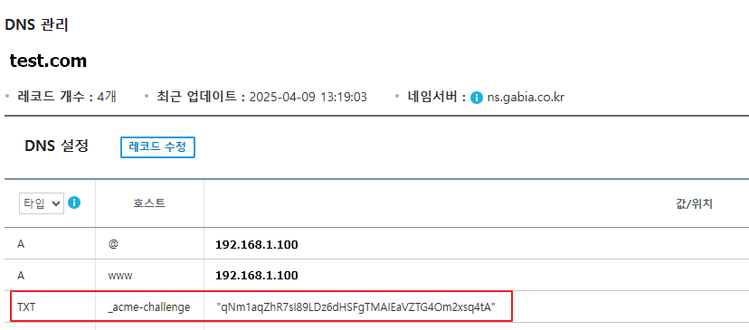

시스템 인프라 운영
무료 인증서 발급(Let’s Encrypt)
certbot을 이용해 무료 SSL 인증서를 발급하고 Nginx/Apache에 적용하는 방법입니다.
1. 패키지 설치
certbot은 Let’s Encrypt에서 무료 SSL 인증서를 발급받고 갱신하는 기본 클라이언트입니다.
sudo dnf install epel-release
sudo dnf install certbot python3-certbot-nginxpython3-certbot-nginx: certbot이 Nginx와 연동되도록 하는 플러그인- 인증서 발급 시 Nginx 설정을 자동으로 탐색하고 SSL 설정을 적용
- server 블록에
ssl_certificate,ssl_certificate_key를 자동 추가
2. 인증서 발급
Nginx 서버용 (자동 설정 포함)
sudo certbot --nginx -d test.com -d www.test.comApache 서버용
sudo certbot --apache -d test.com -d www.test.com웹서버 없는 환경 또는 수동 설정 시
certonly 옵션은 인증서만 발급하고 웹 설정은 자동 변경하지 않습니다.
sudo certbot certonly --standalone -d test.com -d www.test.com3. Apache 및 Nginx 적용
인증서 파일 위치:
/etc/letsencrypt/live/test.com/fullchain.pem/etc/letsencrypt/live/test.com/privkey.pem
Apache 예시
<VirtualHost *:443>
ServerName test.com
ServerAlias www.test.com
DocumentRoot /var/www/html
SSLEngine on
SSLCertificateFile /etc/letsencrypt/live/taeun.store/fullchain.pem
SSLCertificateKeyFile /etc/letsencrypt/live/taeun.store/privkey.pem
<Directory /var/www/html>
Options Indexes FollowSymLinks
AllowOverride All
Require all granted
</Directory>
ErrorLog ${APACHE_LOG_DIR}/error.log
CustomLog ${APACHE_LOG_DIR}/access.log combined
</VirtualHost>Nginx 예시
server {
listen 443 ssl;
server_name test.com www.test.com;
ssl_certificate /etc/letsencrypt/live/taeun.store/fullchain.pem;
ssl_certificate_key /etc/letsencrypt/live/taeun.store/privkey.pem;
ssl_protocols TLSv1.2 TLSv1.3;
ssl_ciphers HIGH:!aNULL:!MD5;
root /var/www/html;
index index.html index.php;
location / {
try_files $uri $uri/ =404;
}
}4. 자동 갱신 여부 확인
systemd 기반 확인
systemctl list-timers | grep certbot실제 자동 갱신 시뮬레이션
80 포트로 테스트하므로 Apache나 Nginx는 일시 중지해야 합니다.
sudo certbot renew --dry-run자동 갱신 제외
sudo rm /etc/letsencrypt/renewal/test.com.conf갱신 시도 주기 확인
systemctl list-timers certbot-renew.timer발급받은 모든 인증서 정보 확인
sudo certbot certificates5. 와일드카드 인증서 발급
와일드카드 인증서는 HTTP-01 방식으로는 검증이 불가능하여 반드시 DNS-01 방식(TXT 레코드 인증)으로만 가능합니다.
sudo certbot certonly --manual \
--preferred-challenges dns \
-d "*.test.com" -d test.com이후 출력되는 TXT 레코드 값을 DNS에 등록합니다.
가비아 DNS 레코드 등록 예시

가비아 DNS에서 _acme-challenge TXT 레코드 등록 화면
6. API 키 방식 (Cloudflare 예시)
DNS 레코드 등록을 API 키 방식으로 자동화할 수 있습니다.
sudo certbot certonly \
--dns-cloudflare \
--dns-cloudflare-credentials /home/taeun/.secrets/cloudflare.ini \
--dns-cloudflare-propagation-seconds 30 \
-d "*.test.com" -d test.comcloudflare.ini 파일 예시
dns_cloudflare_api_key = 여기에_API_키_입력
dns_cloudflare_email = 이메일@example.com설치 가능한 DNS 플러그인 확인: https://pypi.org/search/?q=certbot-dns
7. conf 자동 기입
--apache 옵션 사용 시 ServerName이 일치하는 VirtualHost 블록을 찾아 인증서 설정을 자동 추가합니다. 소스 컴파일로 설치한 경우 경로를 지정하거나 심볼릭 링크를 생성해야 합니다.
sudo certbot --apache \
--apache-server-root /usr/local/apache2 \
--apache-vhost-root /usr/local/apache2/conf/extra \
-d test.com -d www.test.com심볼릭 링크 생성 예시
sudo ln -s /usr/local/apache2/bin/httpd /usr/sbin/httpd
sudo ln -s /usr/local/apache2/bin/apachectl /usr/sbin/apachectl